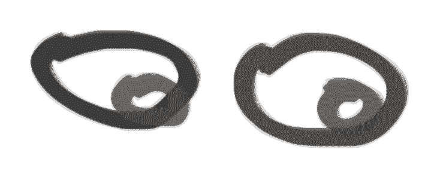
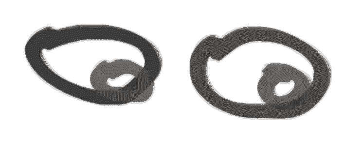

I associate gifs with a short attention span, something to be consumed extremely quickly before moving on to the next thing. I wanted to explore the aspect of time related to gifs and how we experience them. Like Paddy Johnson said, one of the key appeals to the gif is the fact that they’re often temporary and they’re short. In my opinion, gifs belong on the internet and always have. They’re not suited for a museum where you’re meant to spend time looking at an unchanging piece for an extended period of time. I was also inspired by Paolo Ceric’s work with geometric shapes in his gifs. I wanted to show time moving slowly and fast at the same time. In both instances, the gif communicates the sentiment of speed, or lack thereof, perfectly. The hand tapping conveys impatience and the anticipation of change, where time moves slowly. In comparison, the clock shows time literally moving quickly, being taken somewhere by the square.
Ceric, Paolo. PATAKK, 27 Apr. 2014, patakk.tumblr.com/post/84021119696.
Johnson, Paddy. “Will Galleries and Museums Embrace GIF Art?” Artnet News, Artnet News, 24 Mar. 2015, news.artnet.com/art-world/will-galleries-and-museums-ever-embrace-animated-gif-art-9650.
Indexical: refers to the "copy" or the "imprint" nature of a photograph. Photography can attain a level of accuracy and truth that other mediums cannot. It provides an index of sorts for the object it is capturing.
Sadowski, Piotr. “The Iconic Indexicality of Photography.” John Benjamin's Publishing Company, Semblance and Signification, 2011, benjamins.com/.
Schwartz, Jaime. “Is a Photograph Still an Index If It’s on the Internet?” DIS Magazine, 2017, dismagazine.com/discussion/41736/a-discursive-mask/.
ORGANIC
MANMADE